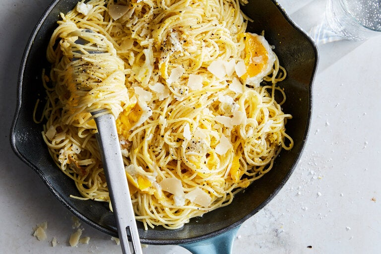

Spaghetti With Fried Eggs

description
Here's a quick and delicious pasta dish to make when you have little time, and even less food in the house. All you need is a box of spaghetti, four eggs, olive oil and garlic (Parmesan is a delicious, but optional, addition).
ingredients
- Salt
- ½ pound thin spaghetti
- 6 tablespoons extra virgin olive oil or lard
- 2 large cloves garlic, lightly smashed and peeled
- 4 eggs
- Freshly ground black pepper
- Freshly grated Parmesan or pecorino cheese, optional
steps
- Bring a pot of salted water to the boil. Start the sauce in the next step, and start cooking the pasta when the water boils.
- Combine garlic and 4 tablespoons of the oil in a small skillet over medium-low heat. Cook the garlic, pressing it into the oil occasionally to release its flavor; it should barely color on both sides. Remove the garlic, and add the remaining oil.
- Fry the eggs gently in the oil, until the whites are just about set and the yolks still quite runny. Drain the pasta, and toss with the eggs and oil, breaking up the whites as you do. (The eggs will finish cooking in the heat of the pasta.) Season to taste, and serve immediately, with cheese if you like.